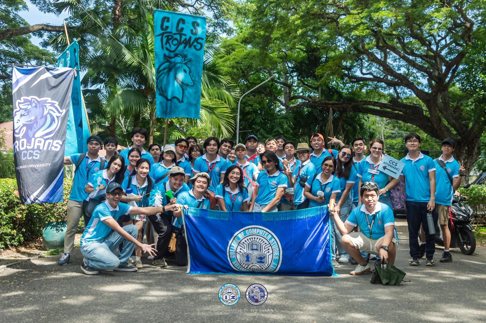
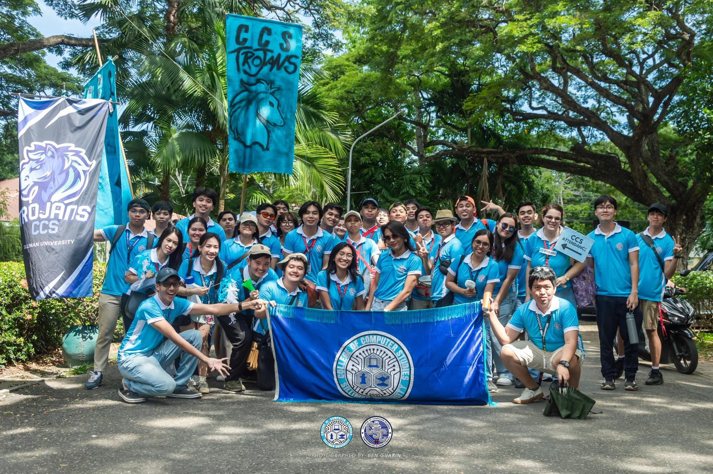

This website was developed as part of the requirements for the GE10 class. Its main purpose is to serve as a personal journal, documenting my participation in various events that align with the core values of Silliman University, known as the 5 C's. Through this platform, I will reflect on experiences, on how they relate to those guiding principles.